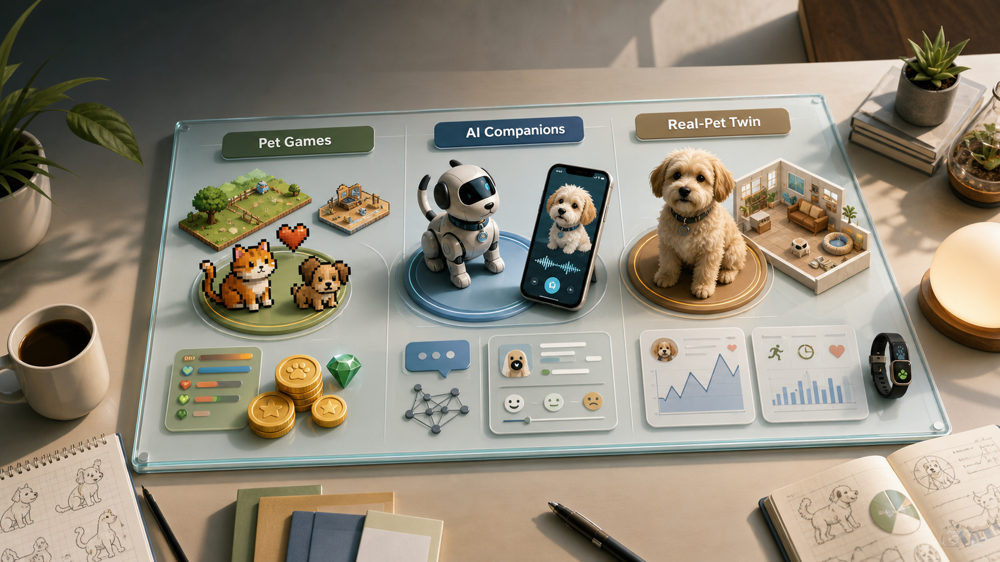

经典留存循环
Tamagotchi、Pou、Talking Tom 证明喂食、清洁、玩耍、成长、装扮和小游戏足够支撑日常打开，但这些机制必须接入真实宠物数据才有新价值。

AI Pet Research · 2026-05-30
结论很直接：AI Pet 不应做成普通虚拟宠物或聊天皮肤。最有价值的方向是把真实宠物档案、设备/mock 数据、每日照护任务、桌宠表达和商品推荐连成可信闭环。
本专题新增 25 个游戏与 AI 虚拟宠物项目档案，并补充 20 个现有商业产品档案；同时接入已有健康、社区、机器人/桌宠调研。经典宠物游戏提供留存结构，现有产品证明商业路径，AI/研究项目提供智能和真实宠物理解路径。
现有产品已经覆盖虚拟宠物游戏、AI 宠物 App、社区服务、智能摄像头、机器人宠物和健康硬件。它们证明需求存在，但还没有把真实宠物数据、桌宠表达、照护任务和商业推荐完整合在一起。
| 产品层 | 代表产品 | 已经成立的能力 | AI Pet 应采用的方式 |
|---|---|---|---|
| 虚拟宠物 | Tamagotchi Uni/Paradise、Pou、Neko Atsume 2、Talking Tom、Webkinz、Neopets | 照护循环、身份绑定、装扮、小游戏、异步回访和长期账号资产。 | 保留低摩擦日常循环，把状态来源换成真实宠物档案和数据。 |
| 社交经济 | Adopt Me!、Pet Simulator 99 | 收集、稀有度、交易、房屋、活动和高频内容更新。 | 只借鉴图鉴、挑战和分享，不做抽卡/交易主循环。 |
| AI App | TamaPets、Pet Genius、Pawzy/Woofy、SafePet AI、PetAI | AI 聊天、照片扫描、营养/药品扫描、健康时间线和 PDF 报告。 | AI 回答必须绑定单只宠物事实、最近数据、库存和安全边界。 |
| 社区服务 | PetMeet、PawSpace、Pawkadot、BringFido | 宠物身份、社区问答、活动、丢宠协作、宠物友好地点和服务推荐。 | 第一版做挑战/分享卡，服务推荐只由任务和约束触发。 |
| 摄像头硬件 | Furbo Nanny、PETLIBRO Scout、Petcube、Pumpkii | 摄像头事件、双向语音、投食、激光、多宠识别、AI 摘要。 | 先抽象 `CameraEvent` 和 `RemoteCareEvent`，不依赖封闭硬件 API。 |
| 机器人宠物 | Sony aibo、Casio Moflin、Loona、EMO | 情绪成长、动作/表情、AI 日记、桌面或家庭存在感。 | 用 OpenPets 做软件桌宠表达，硬件机器人不进第一版。 |
不是所有“宠物游戏能力”都适合 AI Pet。MVP 要选择能强化真实照护价值的机制，推迟容易把产品带偏的经济和社交系统。
Tamagotchi、Pou、Talking Tom 证明喂食、清洁、玩耍、成长、装扮和小游戏足够支撑日常打开，但这些机制必须接入真实宠物数据才有新价值。
AI 不应只负责聊天。它要解释状态来源、生成今日任务、记住宠物偏好、把提醒转成桌宠表达，并在健康/库存边界内给出建议。
Roblox 宠物经济、AR 繁殖、Web3 资产和复杂 3D 都有传播性，但会分散 MVP。第一版先完成真实照护闭环。
高优先级不是“最火”，而是最能证明 AI Pet 应该怎么做。
| 代表项目 | 类别 | 关键学习 | MVP 处理 |
|---|---|---|---|
| Tamagotchi Uni、Pou、My Talking Tom | 经典照护 | 短会话、需求条、成长反馈、装扮和低门槛互动。 | 直接吸收为状态条、互动按钮和任务完成反馈。 |
| Nintendogs + Cats、Petz、Creatures、Black & White | 行为模拟 | 宠物需要有个体历史、训练反馈和可塑造个性。 | 先做可解释长期记忆，不做复杂人工生命。 |
| Neopets、Webkinz、Adopt Me!、Pet Simulator 99 | 社区经济 | 宠物身份、库存、活动和展示能长期运营。 | 只预留社区挑战和库存，不做交易/抽卡主循环。 |
| Peridot、Wobbledogs、Bootloader Digital Pets | 生成/空间 | 唯一宠物、繁殖和空间存在感很强，但成本和留存风险高。 | 二阶段考虑外观生成、AR 和繁殖。 |
| AI-tamago、tama96、TamaPets、AI Pet Evolution | AI 虚拟宠物 | LLM 表达、MCP 和经典照护已经有可用参考。 | Domain Service 掌握事实，LLM 做解释和表达。 |
| PetLLM、iPET、PartyCiPET | 真实宠物 AI | 真实宠物行为理解和人宠共同任务是差异化来源。 | 第一版用 mock/手动 observation 预留数据结构。 |
| AIBO、Moflin、Loona、EMO、OpenPets | 已有调研 | 陪伴感来自动作、表情、声音、感知和低打扰常驻。 | 详见现有机器人/桌宠调研；OpenPets 仍是桌宠主底座。 |
下一步不是扩玩法，而是把最短闭环打穿：真实宠物数据进入系统，生成可解释任务，虚拟宠物状态变化，桌宠同步表达。
完整项目档案已经写入 docs，可继续作为产品设计和实现依据。